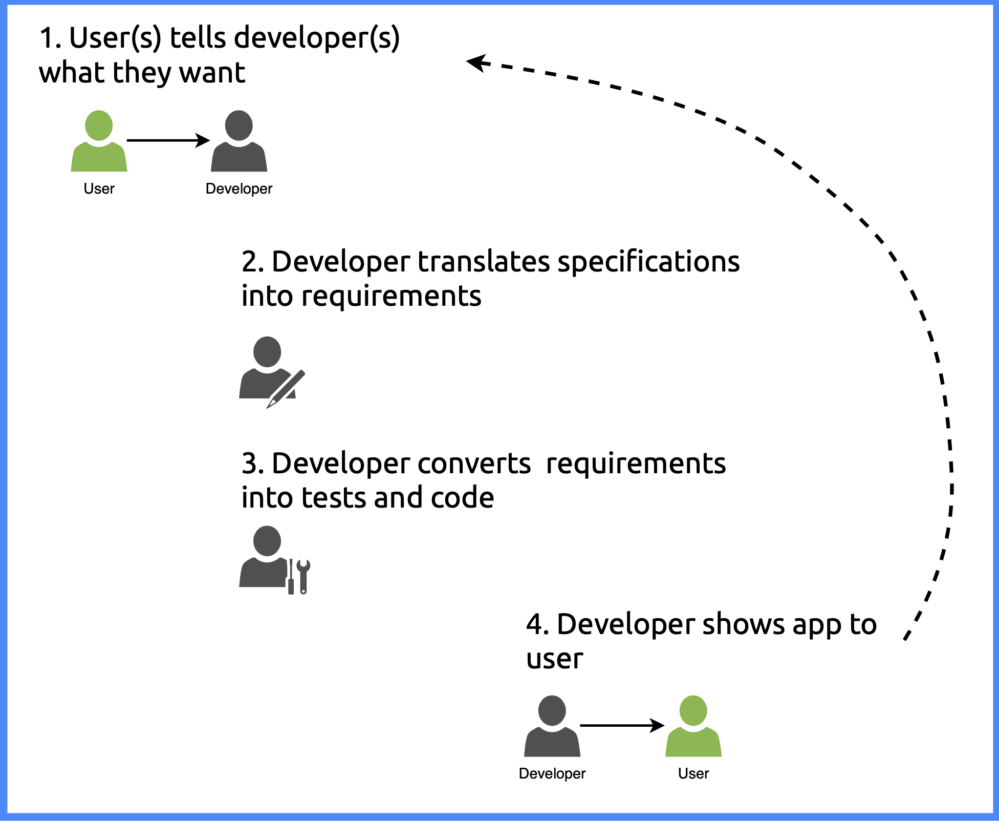

install.packages(c("testthat", "shinytest2", "covr"))
library(testthat)
library(shinytest2)
library(covr)11 Specifications
Every developer looking to test their code is faced with the same two questions:
- What should I test?
- How should I test it?
This chapter focuses on what to test–or specifically, how to figure out what to test. This process usually involves converting a list of user needs into testable requirements. The following chapters in this section have examples of tests, but don’t go into depth on how to write tests. Excellent resources exist for writing unit tests in R packages 1 and testing shiny apps. 2 3 The goal of this chapter is to illustrate the connections between the user’s needs, the code below R/, and developing tests.
The code chunk below will load the necessary packages for testing.
(If you’re using devtools, you won’t have to worry about installing testthat and covr)
11.1 Application requirements
Information about the various tasks and activities an application is expected to perform in typically stored in some kind of software requirements specification (SRS) document.4 The SRS can include things like distinct design characteristics, budgetary, technological, or timeline restrictions, etc. This document breaks down an application’s intended purpose (i.e., the problem it’s designed to solve) into three general areas: user specifications, features, and functional requirements.
11.1.1 User Specifications
The user specifications are the goals and objectives stakeholders want to achieve with the application. They use terms like ‘deliver value’ and ‘provide insight’ and provide the basis for deriving the application’s features. 5
11.1.2 Features
Features translate the user expectations into an application capabilities. Generally speaking, features capture the tasks and activities user should “be able to” accomplish with the application (i.e., explore data with a graph).
11.1.3 Functional Requirements
Functional requirements are written for developers and provide the technical details on each feature. A single feature often gives rise to multiple functional requirements (these are where users needs come into direct contact with code)6
11.1.3.1 In summary
The areas above help direct the development process, albeit from slightly different perspectives.
The user specifications capture the needs and expectations of the end-user.
The features describe the high-level capabilities of the application.
Functional requirements are the testable, specific actions, inputs, and outputs.
11.2 Application developemnt
The Shiny application development process follows something like the figure below:

The figure above is an oversimplification, but it highlights a common separation (or ‘hand-off’) between users/stakeholders and developers. In the sections below, we’ll look at two common development processes: test-driven and behavior-driven development.
11.2.1 Test-driven development
If moviesApp was built using test-driven development (TDD), the process might look something like this:
- Gather user needs and translate into application features:
- Document the application’s capabilities for exploring movie review variables from IMDB and Rotten Tomatoes.
- Include feature descriptions for displaying continuous variables (i.e., ‘critics score’ and ‘audience score’) categorical variables (i.e., ‘MPAA’ ), graph visual attributes (size, color, opacity), and an optional plot title.
- Write Tests:
- Write tests to ensure the graph displays relationships between a set of continuous and categorical variables when the app launches.
- Run Tests:
- Before writing any code, these tests will fail.
- Develop Features:
- Write UI, server, module, and utility functions for user inputs and graph outputs.
- Rerun Tests:
- If the graph has been correctly implemented in the application, the tests should pass.
- Write more Tests:
- Add more tests for additional functionalities (e.g., an option to remove missing values from graph).
Starting with tests and writing just enough code to get them to pass often results in developing less (but better) code. The drawback to this approach is a strict focus on the function being tested and not the overall objective of the application.
11.2.2 Behavior-driven development
In behavior-driven development (BDD) (or behavior-driven testing), users and developers work together to understand, define and express application behaviors in non-technical language, 7
“Using conversation and examples to specify how you expect a system to behave is a core part of BDD” - BDD in Action, 2ed
Placing an emphasis on writing human-readable expectations for the application’s behaviors makes it easier to develop tests that can focus on verifying each user need exists (and is functioning properly). In BDD, the application’s expected capabilities are captured in Features and illustrated with concrete examples, or Scenarios.
11.2.2.1 Feature
In BDD, a Feature describes an implemented behavior or capability in the application, from a user’s perspective. Typically, these are written in the Gherkin format using specific keywords:8
As a ...
I want ...
So that ...
Below is an example Gherkin Feature for the graph in movies_app():
Feature: Visualization
As a user
I want to see the changes in the plot
So that I can visualize the impact of my customizationsAs you can see, the feature uses plain language and the wording is user-centric, so it remains accessible to both developers and users (or other non-technical stakeholders).
11.2.2.2 Scenario
A Gherkin Scenario provides a concrete example of how the Feature works and has the following general format:
Given ...
When ...
Then ...
An example Scenario for movies_app() might be:
Scenario: Viewing the Data Visualization
Given I have launched the application
And it contains movie review data from IMDB and Rotten Tomatoes
And the data contains variables like 'Critics Score' and 'MPAA'
When I interact with the controls in the sidebar panel
Then the graph should update with the selected options11.2.2.3 Background
Instead of repeating any pre-conditions in each Scenario (i.e., the steps contained in the “Given” and first “And” statement), we can establish the context with a Background:
Background: Launching the application
Given I have launched the application
And it loads with movie review data from IMDB and Rotten Tomatoes
Scenario: Viewing the Data Visualization
Given the data contains variables like 'Critics Score' and 'MPAA'
When I interact with the controls in the sidebar panel
Then the graph should update with the selected optionsAdopting the Gherkin format (or something similar) provides a common language to express an application’s behavior:
As developers, we can work with users and shareholders to write specifications that describe the expected behavior of each
FeatureWhen developing tests, we can group the tests by their
FeatureandScenariosEach test can execute a step (i.e., the
Thenstatements).
In the next section we’ll cover how to map test code for each Scenario step with testthat.
11.2.3 BDD and testthat
testthat’s BDD functions (describe() and it()) allow us add Gherkin-style features and scenarios to our test files, ensuring the application remains user-centric while meeting the technical specifications.9
11.2.3.1 describe() a feature
We can use the language from our Feature, Background, and Scenario to in the description in the argument of describe():
testthat::describe(
description = "Feature: Visualization
As a user
I want to see the changes in the plot
So that I can visualize the impact of my customizations",
code = {
})We can also nest describe() calls, which means we can include the Background (or other relevant information):
describe(
"Feature: Visualization
As a user
I want to see the changes in the graph
So that I can visualize the impact of my customizations.",
code = {
describe(
"Background: Launching the application
Given I have launched the application
And it loads with movie review data from IMDB and Rotten Tomatoes",
code = {
})
})- 1
-
BDD Feature (title and description)
- 2
- Background (preexisting conditions before each scenario)
11.2.3.2 Confirm it() with a test
Inside describe(), we can include multiple it() blocks which “functions as a test and is evaluated in its own environment.”
In the example below, we’ll use an it() block to test the example scenario from above:10
testthat::describe(
"Feature: Visualization
As a user
I want to see the changes in the graph
So that I can visualize the impact of my customizations.",
code = {
testthat::describe(
"Background: Launching the application
Given I have launched the application
And it loads with movie review data from IMDB and Rotten Tomatoes",
code = {
testthat::it(
"Scenario: Viewing the Data Visualization
Given the data contains variables like 'Critics Score' and 'MPAA'
When I interact with the controls in the sidebar panel
Then the graph should update with the selected options",
code = {
# test code
})
})
})- 1
-
BDD Feature (title and description)
- 2
- Background (preexisting conditions before each scenario)
- 3
- Scenario (a concrete examples that illustrates a feature)
- 4
- Test code
In the scenario above, Then contains the information required for the testthat expectation. This could be expect_snapshot_file() or vdiffr::expect_doppelganger()–whichever makes sense from the user’s perspective.
These are generic examples, but hopefully the tests in the upcoming chapters convey how helpful and expressive BDD functions can be (or they inspire you to properly implement what I’m attempting to do in your own app-packages).11
11.3 Traceability Matrix
After translating the user needs into functional requirements, we can identify what needs to be tested by building a look-up table (i.e., a matrix).
I like to store early drafts of the requirements and traceability matrix in a vignette:12
usethis::use_vignette("test-specs")Adding our first vignette to the vignettes/ folder does the following:
Adds the
knitrandrmarkdownpackages to theSuggestsfield inDESCRIPTION13Suggests: knitr, rmarkdownAdds
knitrto theVignetteBuilderfield14VignetteBuilder: knitrAdds
inst/docto.gitignoreand*.html,*.Rtovignettes/.gitignore
The first column in the traceability matrix contains the user specifications, which we can ‘trace’ over to the functional requirements and their relevant tests.15
| Specifications | Features | Requirements | Test |
|---|---|---|---|
| S1: The application should source movie review data from platforms like IMDB or Rotten Tomatoes | F1.1: Feature: Movie Review Dataset Variables As a user I want to have a dataset with variables from IMDB and Rotten Tomatoes In order to provide comprehensive movie reviews Background: Given the application has access to IMDB and Rotten Tomatoes APIs |
Scenario: Movie Review Continuous and Categorical Variables When the application loads from IMDB and Rotten Tomatoes movie review data Then the dataset should include a continuous critic ratings variable And the dataset should include a continuous audience ratings variable And the dataset should include a categorical mpaa ratings variable And the dataset should include a categorical genres variable |
Building a traceability matrix ensures:
All user specifications have accompanying application features.
Each feature has been broken down into precise, measurable, and testable functional requirements.
Tests have been written for each functional requirement.
11.4 Recap

This section’s code is in the 11_tests-specs branch of moviesApp.
Understanding the relationship between user specifications, features, and functional requirements gives us the information we need to build applications that satisfy the technical standards while addressing user needs. Documenting requirements in Gherkin-style features and scenarios allows us to capture the application’s behavior without giving details on how the functionality is implemented.
In the next chapter, we’re going to cover various tools to improve the tests in your app-package. The overarching goal of these tools is to reduce code executed outside of your tests (i.e., placed above the call to test_that() or it()).
Recap: testing your app-package
Specifications
Scoping tests: user specifications outline software goals and needs, and the functional requirements provide the technical details to achieve them.
User specifications: descriptions of what a user expects the application to do (i.e., the user ‘wish list’ of features they want in the application).
Features: detailed list of the main capabilities and functions the application needs to offer to users.
Functional requierments: testable, specific step-by-step instructions for ensuring the application does what it’s supposed to do.
Traceability matrix: tracking tool for connecting the users ‘wish list’ (i.e, specifications) to what’s being tested.
Unit tests are covered extensively in R Packages, 2ed and the
testthatdocumentation↩︎Mastering shiny dedicates an entire Chapter to Testing.)
shinytest2also has excellent documentation (and videos), and I highly recommend reading through those resources.↩︎I will cover a few tips and tricks I’ve learned for testing module server functions with
testServer()because they’re not in the documentation.↩︎Read more about what goes in the Software Requirements Specification↩︎
User Specifications are sometimes referred to as “user stories,” “use cases,” or “general requirements”↩︎
‘Features’ and ‘functional requirements’ are sometimes used interchangeably, but they refer to different aspects of the application. Features are high-level capabilities an application should have, and often contain a collection of smaller functionalities (broken down into the specific functional requirements).↩︎
Read more about behavior-driven development↩︎
Gherkin is the domain-specific language format used for expressing software behaviors. Tools like Cucumber or SpecFlow maps and executes the Gherkin descriptions against the code to generate a pass/fail report status for each requirement.↩︎
Read more about
describe()andit()in thetestthatdocumentation. and in the appendix.↩︎Each
it()block contains the expectations (or what you would traditionally include intest_that()).↩︎For an excellent description on the relationships between behavior-driven development, test-driven development, and domain-driven design, I highly recommend BDD in Action, 2ed by John Ferguson Smart and Jan Molack.↩︎
Storing the traceability matrix in a vignette is great for developers, but using an issue-tracking system with version control is also a good idea, like GitHub Projects or Azure DevOps.↩︎
We briefly covered the
Suggestsfield in Dependencies, but in this case it specifically applies to “packages that are not necessarily needed. This includes packages used only in examples, tests or vignettes…” - Writing R Extensions, Package Dependencies↩︎The documentation on
VignetteBuildergives a great example of whyknitrandrmarkdownbelong inSuggestsand notImports.↩︎When building tables in vignettes, I highly recommend using the Visual Markdown mode.↩︎